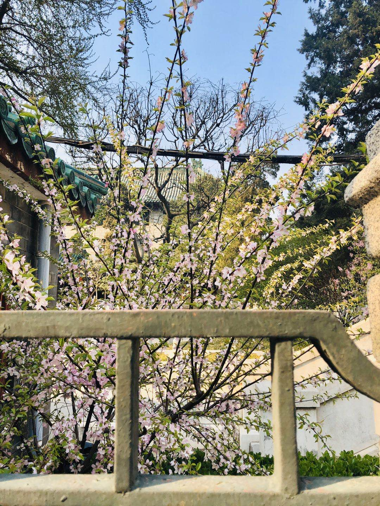
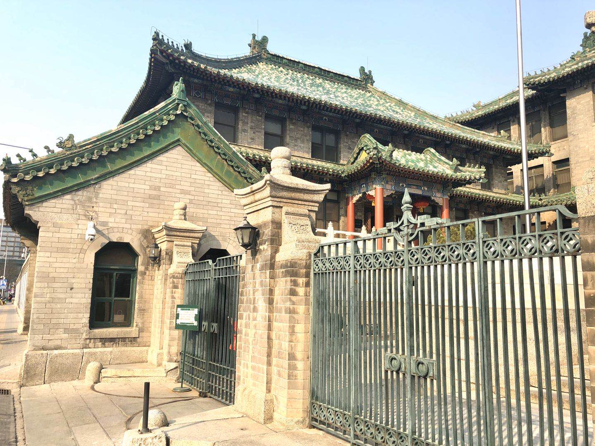
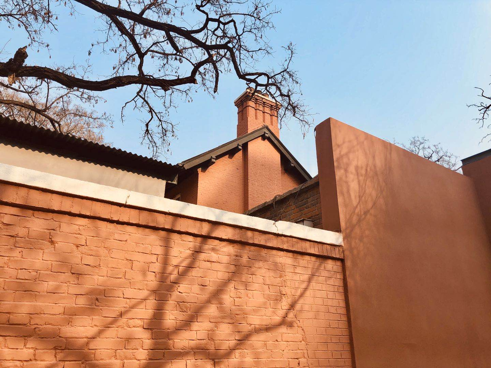

为什么要写博客？
写博客是一个输出和分享的过程，将会对博主本人和读者产生积极的影响。为了保证输出对读者存在价值，首先需要确保博客内容的准确性，即不要输出错误的内容误导读者；要保证博客内容的逻辑性，即会使让读者读起来有云里雾里的感觉。为了达到这样的效果，就要求博主对分享的知识有足够深刻的理解，并能够转化为自己的语言分享出来。高质量的博客，对博主和读者而言，是一种双赢的结果。
为什么没有养成持续以恒的习惯？
工作四年半的时间，写博客一直以来都处于养鱼的状态，没有养成持之以恒的习惯，非常惭愧。除了开始工作的那段时间有比较高的热情，接下来的几年基本放弃，总结下来，大概有下面几点原因：
- 刚开始工作，出生牛犊不怕虎，不怕嘲笑。工作一段时间，深感技术不足，以后畏首畏尾。
- 博客搭建成本有点高，更换电脑之后，需要重新搭建，怕麻烦，一直拖着没做
- 在不同的公司，工作强度和方向不一样，在比较忙、没有值得分享的技术点的情况下没有分享的精力和动力
- 学习的热情没有持续，没有输入很难保持产出
- 深入思考的时候太少，面向谷歌和百度开发一度程度扼杀人思考的能力
如何改进？
- 搭建好新的博客，做好博客的版本管理，搭建好博客不要随便改动博客配置，须知博客的本质重在内容而不是花里胡哨的样式，切勿本末倒置
- 强制自己写博客，以至少每周一篇周报的频率写技术分享，倒逼自己在工作中寻找值得分享的知识点
- 保持持续学习的习惯，不断更新自己的知识栈
- 减少面向百度、谷歌开发，多思考，深入思考，探索本质
写在开篇-题外话
2020年是不同寻常的一年，战争、蝗灾、粮食危机、新型冠状肺炎…天灾人祸似乎要在这一年集中爆发，极大的考验各个国家面危机的能力。全世界现在一片混乱，人道主义危机轮番上演，西方世界逐渐撕掉文明的面具，暴露出强盗的本性。而在过去的两个多月，全国人民在党的带领下众志成城，付出了极大代价，艰难战胜了新冠肺炎，逐渐复工复产。然而面对动荡的世界，中国无法独善其身，不断向其他国家援助医疗物资、派遣医疗专家，开启支援全世界的模式。在中国逐渐展现出世界领袖气质的同时，大洋彼岸的现任世界领袖在特朗普的带领下，开启了一连串迷之操作，迅速将美国带入新冠肺炎的震中。为了挽救股票市场，美国将基准利率降到0，并开启无限QE，疯狂印钞2万亿美元大放水。这次疫情也许会加速新一轮的经济危机的到来，到时候将会出现大量公司倒闭，无数工薪族面临裁员。我们要做的是：做最坏的打算，抱最大的希望，不断的提升自己技术能力，确保自己在经济大萧条的时候保持足够的竞争力，将危机对自己的影响降到最低。希望各位共勉！
说点开心的
从1.29号到北京，到现在整整两个月，除了家和公司两个地方，其他地方都没有去过，像我这样的自认为很能宅的人都快憋坏了。因为之前答应帮同学买药，就趁着这大好春光去了趟北京协和医院，正好放放风、撒撒野。虽然因为上班时间原因药没有买成，但是发现协和医院附近四合院景色不错，和大家分享一下，就放在文章最后了。
结尾
第一周周报，就是想和大家分享下自己的想法，也没有准备技术文章。和大家分享一些北京的春光，希望大家：面朝大海，春暖花开。
  